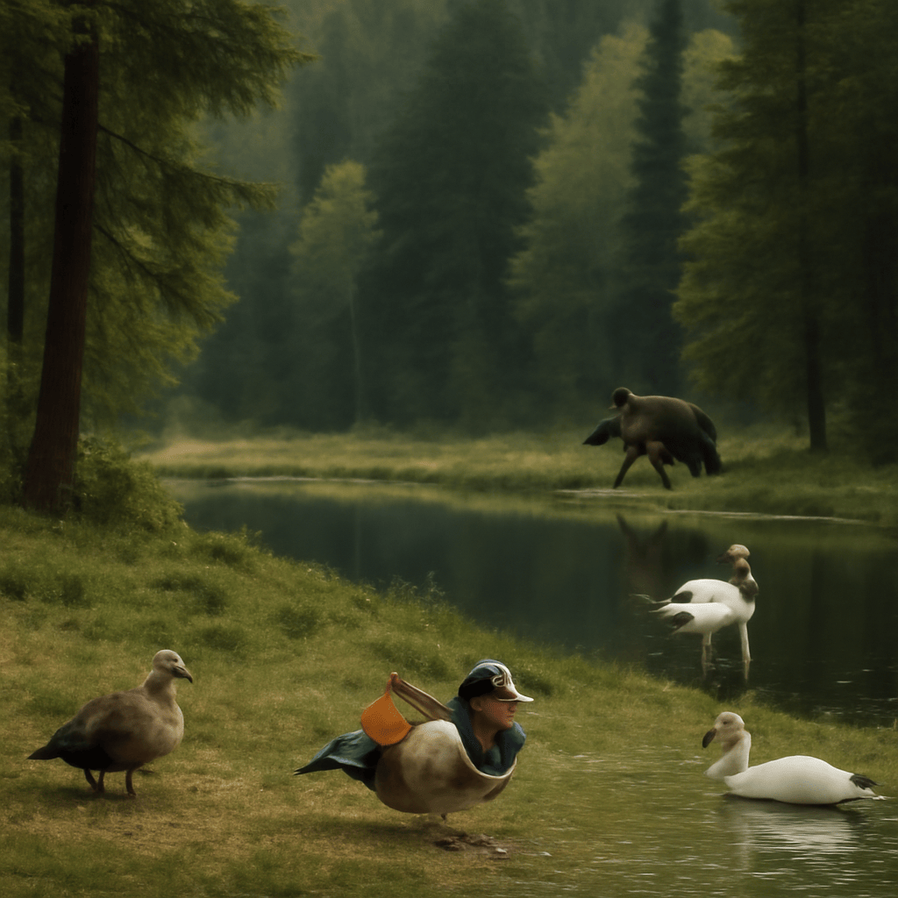

2025/09/07(日)
今日は森の中で静かにウズラやオシドリ、白鳥を観察しておったのじゃ。小さなウズラは丸い体に茶色や灰色の羽がとても愛らしく、地面をちょこちょこ歩く様は見ていて飽きんのう。オシドリの雄は緑やオレンジの鮮やかな羽根で目を引くが、臆病ゆえにそっと近づくのが肝心じゃ。白鳥は湖面に優雅に浮かび、その姿はまるで絵画のようじゃった。どの鳥も警戒心が強いから、慌てずゆっくり見守るのが自然を楽しむ秘訣じゃな。沢筋を歩いた時の涼しい風やせせらぎの音も心に染みてのう。自然の中で過ごすと、心が軽くなり、日々の小さな悩みも和らぐようじゃ。これからも、怖がらず少しずつ歩み寄り、自然の営みをじっくり味わっていきたいものじゃな。さて、今日のご褒美に蜂蜜をちょっと舐めて、また明日もゆったり歩こうかの。
